For this homework, we implemented a simple rasterizer that, in a beautiful and quite elegant way, is able to abstract away the underlying pixels and polygonal shapes, in this case a triangle,
that are the foundation for the various SVG files that we use and test on. Our rasterizer made use of supersampling, texture mapping, and barycentric coordinate interpolation, all of which
provided slightly different results for each SVG file. As I was working through this homework, there were a few things that I've learned and that I found to be quite interesting as well. These include:
For my rasterization algorithm, I began by identifying what the minimum and maximum bounds were and this was done in an attempt to be as efficient as possible as sampling on pixels outside this bounding box would just be unnecessary overhead. After computing these bounds and establishing my bounding box, I made a double for loop implementation to loop through every pixel along the height and width of the bounding box and followed the point-in-triangle three lines test as discussed in lecture 2. To account for the fact that triangles need not always be in a counter-clockwise orientation, I included an additional check inside my inner most for loop to check whether we are inside/outside of the line and this was made to account for both clockwise and counter-clockwise orientations. Another viable method included using the right hand rule to switch around two points of your triangle but I ultimately settled on the former approach.
My algorithm did make use of this bounding box by identifying what the maximum and minimum bounds were along the "x" and "y" direction, so there is a guarantee that my algorithm meets the aforementioned requirement.
For this task, I had to make some changes to adjust for the fact that now every pixel had sample_rate
color samples per pixel instead of our default 1 color sample per pixel from Task 1. To do this, I simply multiplied the size of
my original buffer, which had enough space for the given number of pixels, by sample_rate t. My algorithm in of itself was very
similar to the algorithm I had in mind for Task 1 and it was largely as follows:
I also made changed to rasterize_point() as needed to account for supersampling.
Supersampling is useful because it allows us to sample various times per pixel and average out the color pertaining to that specific pixel and this plays a key role in us being able to remove some of the aliasing that takes place in the form of sharp edges and "jaggies" in our pixelated image in screen space and this is evident in our images below as the greater our sample rate gets, the smoother our images becomes with the removal of these sharp edges.
|
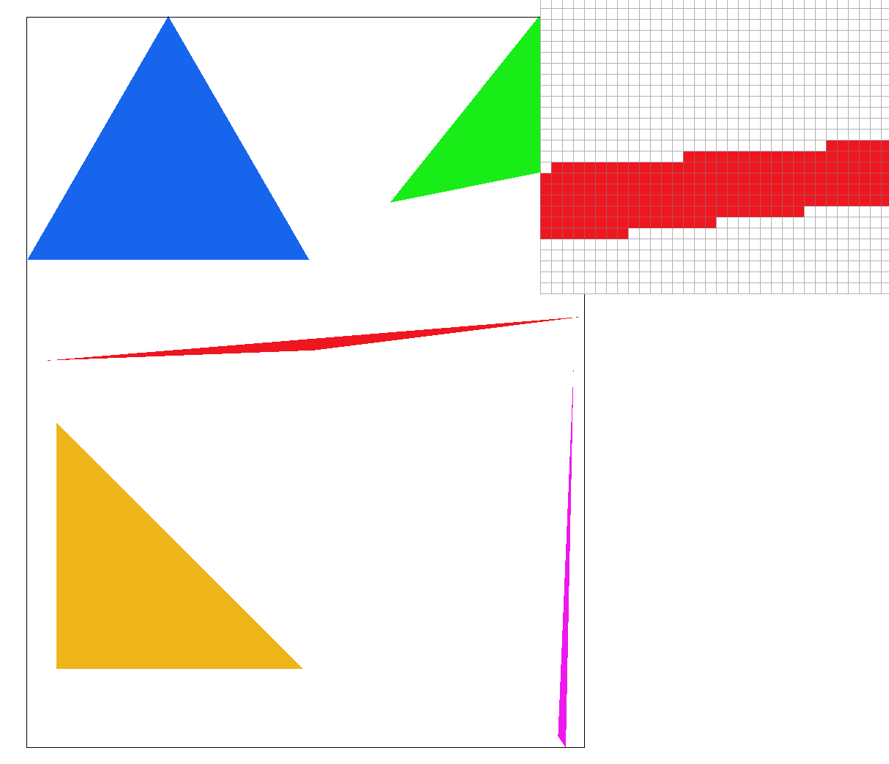
|
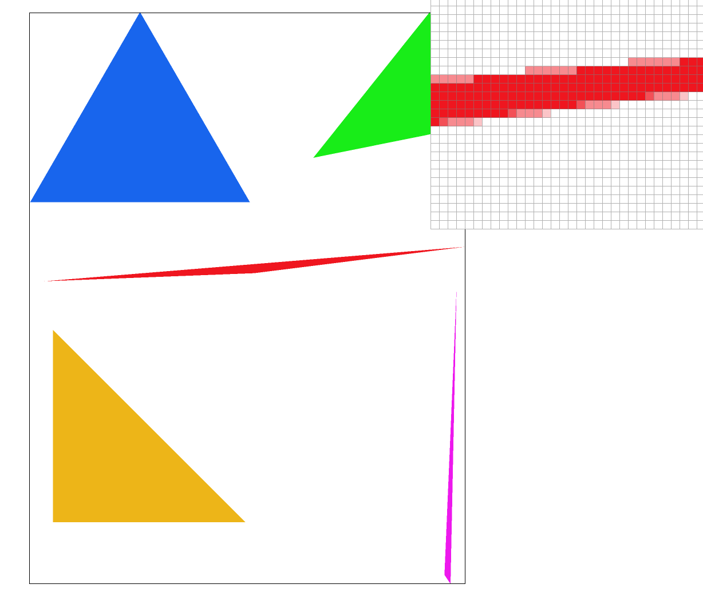
|
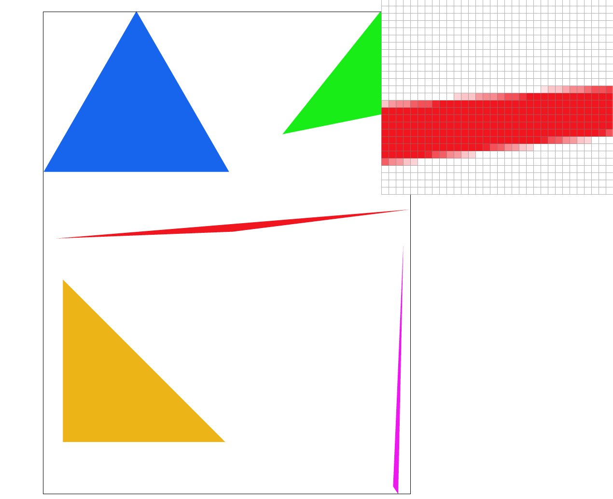
|
In our case, supersampling is used to antialias our triangles by removing some of the jaggedness and sharp edges we see on the sides of our triangle. The higher our sampling rate gets, the smoother our image becomes as well.
Barycentric coordinates are essentially a coordinate system for triangles made up of unit normalized coordinates that are used to express the distance
of some point inside the triangle with respect to each of the three vertices. Since triangles have 3 vertices, these coordinates will
take the following form:
Where each of alpha, beta, gamma represent how far the unit normalized distance is from the point to each corner. So (1, 0, 0), (0, 1, 0), (0, 0, 1) would be
representations where the point is at any of the 3 vertices of our triangle and (1/3, 1/3, 1/3) represents the middle point of our triangle where the point
would be equidistant from all vertices. Any combination of these points will set the point somewhere within the triangle. As can be seen from the images below,
as we increase any one of the (alpha, beta, gamma) coordinates, we get closer to a vertex and therefore the resulting color from that vertex
becomes more dominant and as we get closer to the middle of the triangle, what we see is typically some blending of colors as a result of (alpha, beta, gamma) being used
as weights that are then multiplied by the corresponding color of the vertex.
|
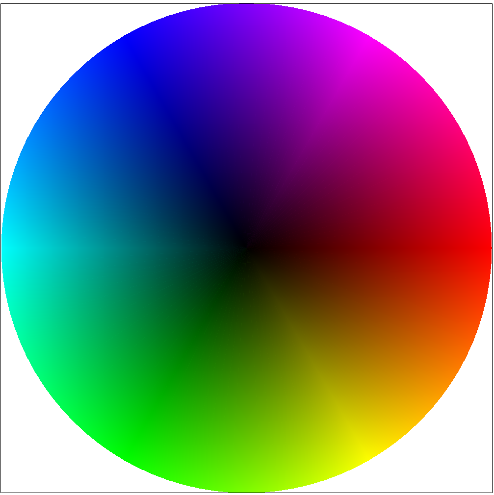
|
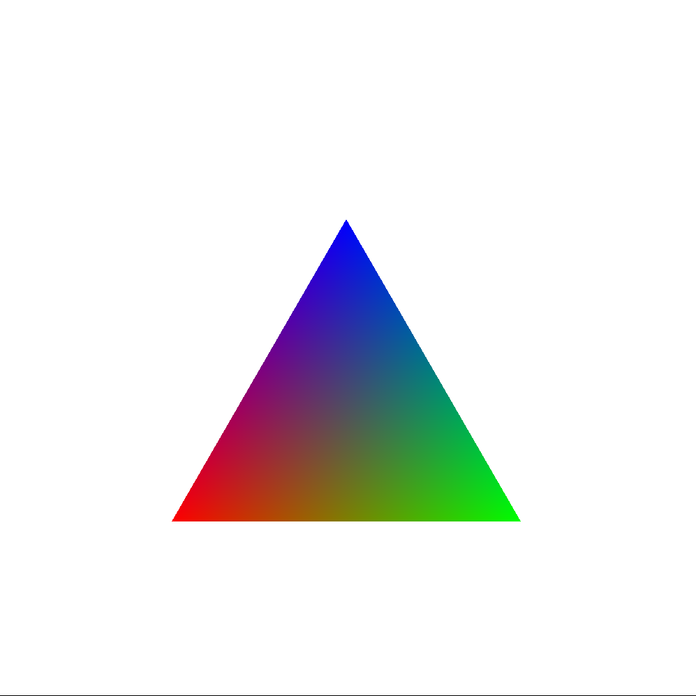
|
Pixel sampling is sort of like a "reconstruction" process where we use a given a subset of encoded pixels, in texture space, and use this to reconstruct
some sample pixel in our screen space and this can be achieved via various methods such as the ones discussed in lecture which include:
In my implementation, I interpreted texture mapping by calculating the barycentric coordinates for each subsample of the pixel, we are still
required to supersample for this task and any tasks going forward, and after performing this operation, we'd convert the resulting coordinates
to our uv texture space and finally depending on which algorithm we decided to run, the following occurred:
The process for bilinear sampling involves first locating and isolating the 4 nearest texels to our desired location and then computing the weighted average of these texels to get some resulting texture for this location. As discussed in lecture, this process of computing the "weighted" average is done via two horizontal interpolations (lerp) followed by a final vertical interpolation which outputs our end result.
The process for nearest neighbor is a lot more simple than bilinear sampling and simply involves rounding to get the nearest texel to our desired location and then using this nearest texel to extract the desired texture.
|
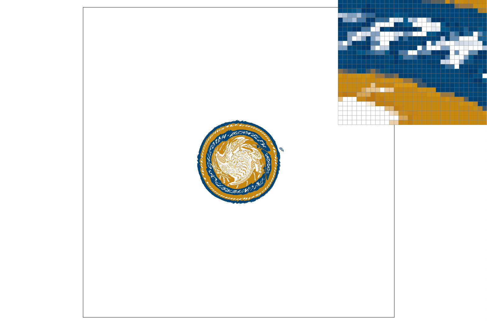
|
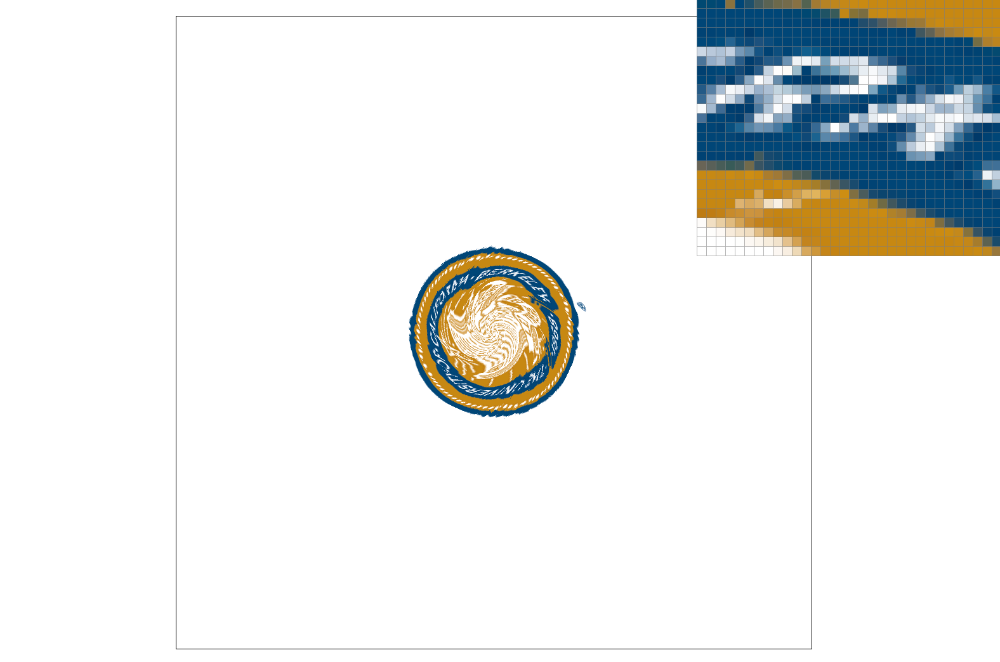
|
|
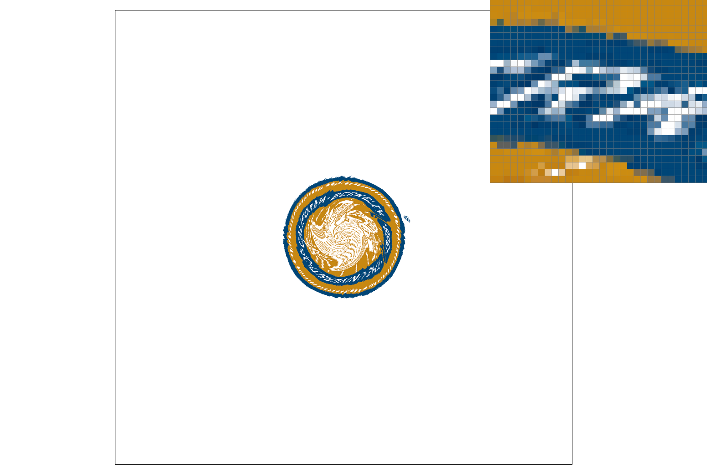
|
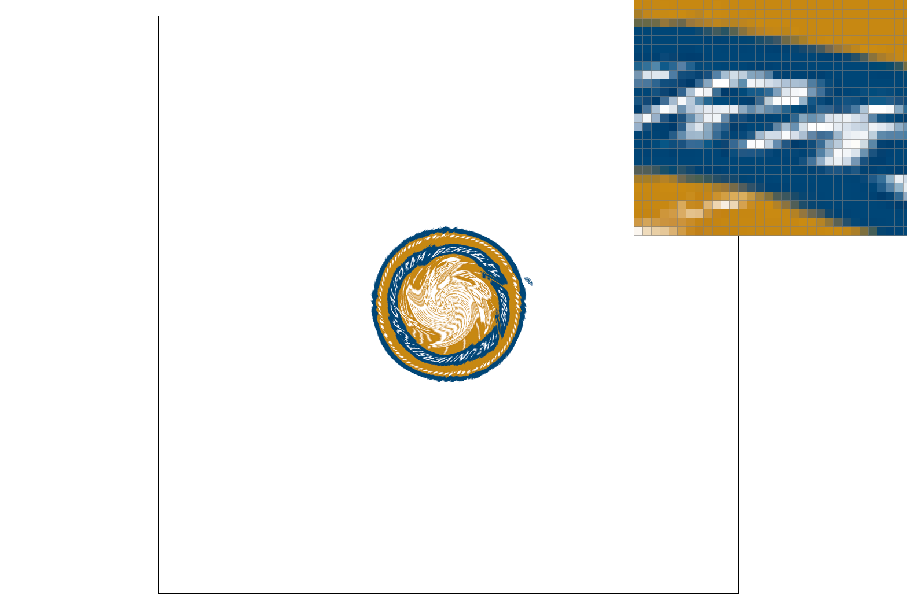
|
What I notice right away from looking at these four images is that the results of using a nearest neighbor algorithm seem to look more "blocky"
whereas the results from bilinear sampling look "smoother" and seemingly more distinguishable. In general, it also seems like the greater
the sampling rate, the better the produced results will be and that is evident by the images on the 2nd row which seem more clearer than the images
above it. Based on the results above, it also seems like the biggest difference will take place when the sampling rate is low and that is evident
by the two images in the first row where:
Intuitively this would make sense as supersampling in general will amplify the quality of the rendered image at the expense of computational costs.
So our sampling rate would have to be rather low for us to truly discern any noticeable differences.
Level sampling is a technique that focuses on selecting different levels of texture for our screen space depending on how far away the object is from the viewer. In doing so, level sampling is able to take advantage of the fact that the closer an object may be to the viewer, the higher the resolution needs to be to accurately portray all the details and intricacies associated with the object in the screen space.
In my implementation, I was able to implement level sampling by following closely to what was described in Lecture 5 and this process included:
|
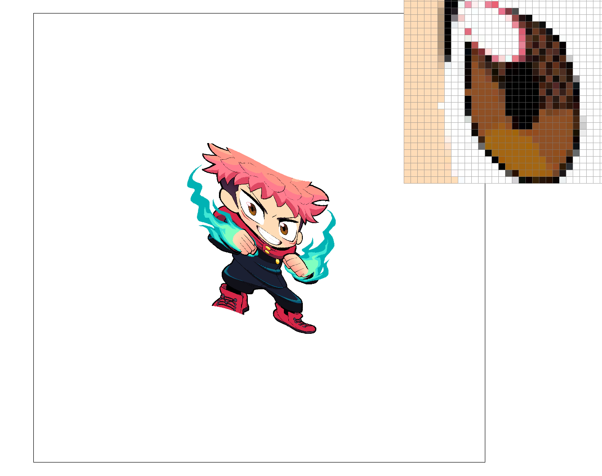
|
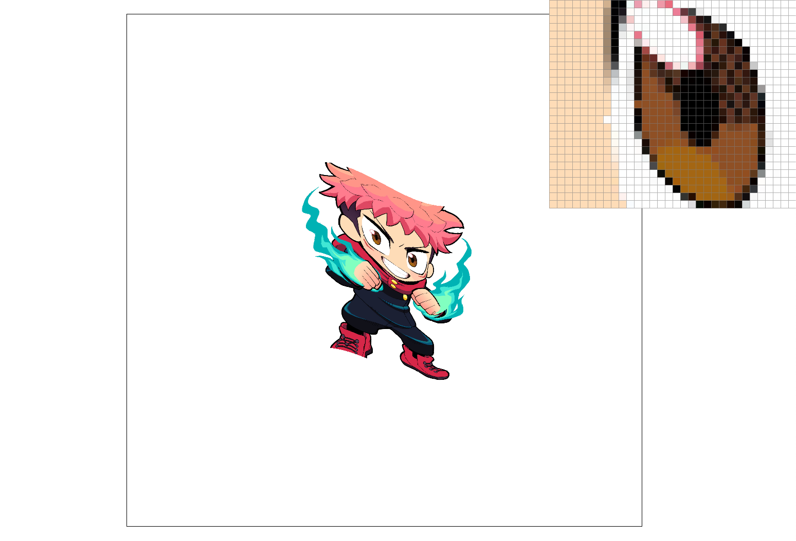
|
|
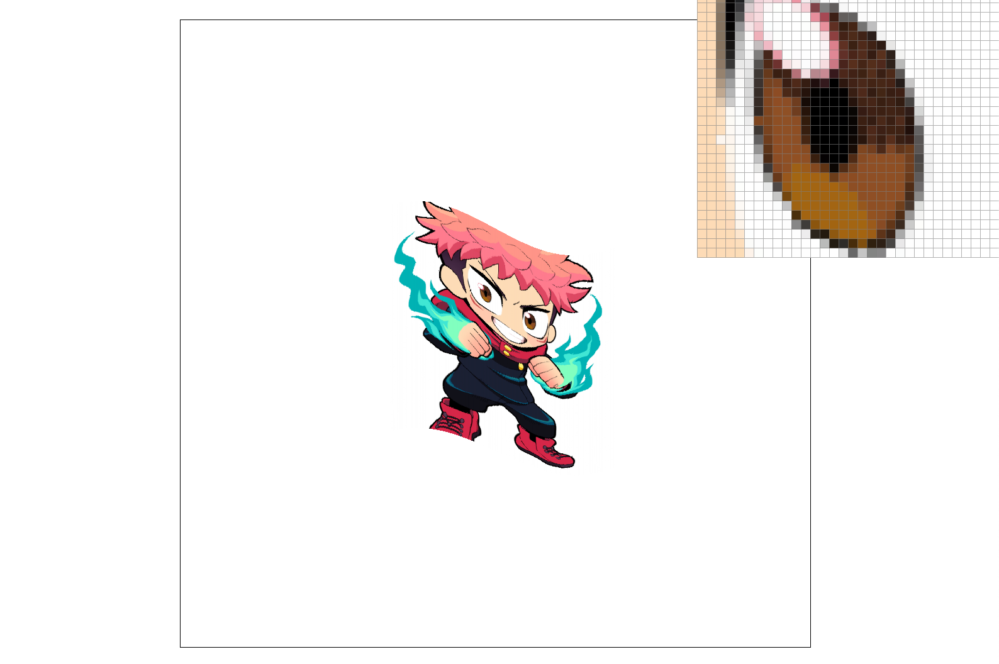
|
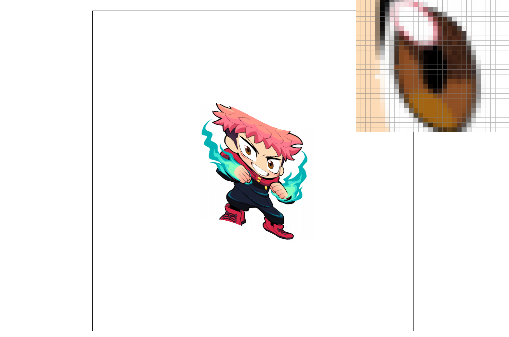
|